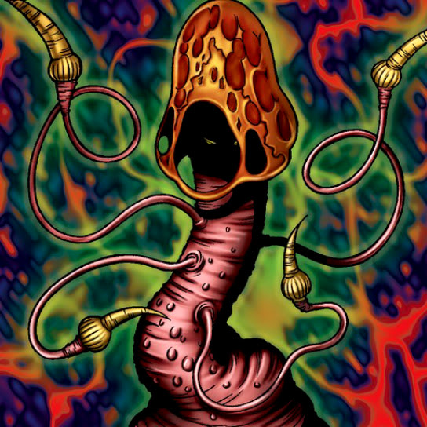

Fungi of the Musk

Description: "Reduces an enemy by 500 points when this card is flipped face-up in battle."
STATS
ATK: 400
DEF: 300DECK COST
Deck Cost per Card: 12EFFECT NOT IMPLEMENTED
Fusion List (24 Possible Fusions)
- Fungi of the Musk + Arlownay = Rose Spectre of Dunn
- Fungi of the Musk + Bio Plant = Darkworld Thorns
- Fungi of the Musk + Candle of Fate = Darkworld Thorns
- Fungi of the Musk + Claw Reacher = Darkworld Thorns
- Fungi of the Musk + Dark Shade = Darkworld Thorns
- Fungi of the Musk + Embryonic Beast = Darkworld Thorns
- Fungi of the Musk + Fungi of the Musk = Darkworld Thorns
- Fungi of the Musk + Greenkappa = Bean Soldier
- Fungi of the Musk + Hiro's Shadow Scout = Darkworld Thorns
- Fungi of the Musk + King Fog = Darkworld Thorns
- Fungi of the Musk + Kuriboh = Darkworld Thorns
- Fungi of the Musk + Madjinn Gunn = Darkworld Thorns
- Fungi of the Musk + Meda Bat = Darkworld Thorns
- Fungi of the Musk + Megirus Light = Darkworld Thorns
- Fungi of the Musk + Midnight Fiend = Darkworld Thorns
- Fungi of the Musk + Monster Eye = Darkworld Thorns
- Fungi of the Musk + Mystery Hand = Darkworld Thorns
- Fungi of the Musk + Mystical Sheep #2 = Mystical Sheep #1
- Fungi of the Musk + Needle Ball = Darkworld Thorns
- Fungi of the Musk + Queen of Autumn Leaves = Rose Spectre of Dunn
- Fungi of the Musk + The Shadow Who Controls the Dark = Darkworld Thorns
- Fungi of the Musk + The Drdek = Darkworld Thorns
- Fungi of the Musk + Wretched Ghost of the Attic = Darkworld Thorns
- Fungi of the Musk + Yamatano Dragon Scroll = Koumori Dragon